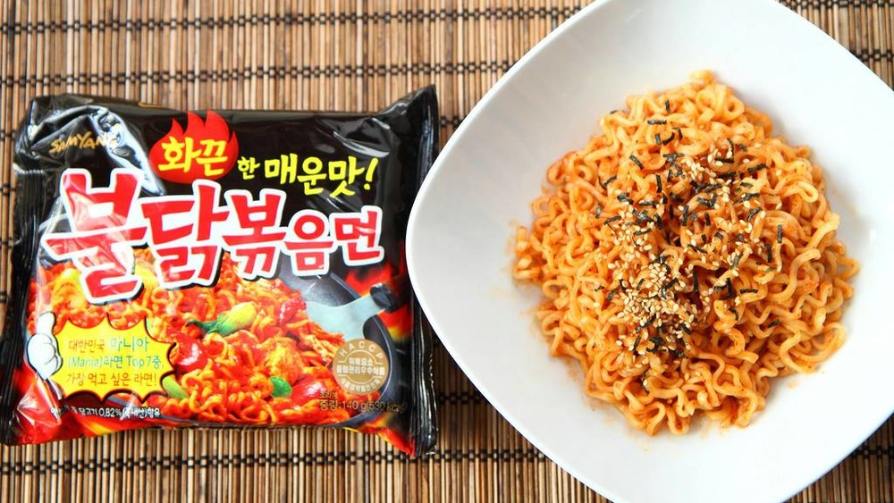

How to Cook Samyang Spicy Ramen AKA Fire Noodles

I'mma show you mothafuckas how to make deez SPICY KOREAN NOODLES that you see on mukbang videos/channels because why the FUCK NOT. The spice stays on your tongue for about 10 min after finishing the noodles..if you can even eat them ya fuckin' pussies. Let's fucking get STARTED!
You will need:
- One pack of Samyang Ramen
- 5 cups of wooder
- a pot or pan that can hold the wooder
STEPS:
- Add 5 cups of wooder into the pan/pot and add it to the stovetop. Set that mothafucka to high heat until it's boiling.
- After the wooder boils, open the pack of Samyang and add the ramen in the wooder. Lower heat to medium-high if ya want. Stir ramen in boiling wooder for a good 5 min.
- After 5 min, strain out da ramen from the wooder
- Add the ramen to a plate(or you can leave it in da pan/pot).
- Open up the spicy sauce pack and add it to the ramen. Stir it until the sauce is evenly spread out through the ramen.
ENJOY THEM MOTHAFUCKAS FIRE NOODLES.Your nose and eyes will water like you're a lil bitch and your ears will get plugged, maybe. uWu